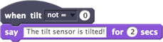

Execute um script quando o sensor de inclinação mudar de posição

Quando o sensor de inclinação ficar inclinado, o script vai ser executado.
O sensor de inclinação retorna um número de 0 a 4. 0 significa não inclinado, 1 inclinado para baixo, 2 para a direita, 3 para cima, e 4 para a esquerda.

Use o menu para escolher = (igual) ou não = (diferente), então digite um número de 0 a 4.
Para usar quando estiver inclinado, você precisa de um sensor de inclinação conectado ao seu computador por meio de um dispositivo LEGO WeDo.